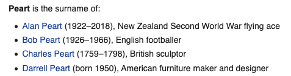

Practice: Basic HTML
One of the best ways to practice HTML and CSS is trying to recreate pages you find on the internet. With the help of Wikipedia's Random Article button, I found some for you!
Try to write the HTML for the following content, following all the rules for syntax, semantics, and style. Each example has the text content that you can copy and paste into your editor, either on repl.it or your own machine. Then examine the content and see how you can break into smaller pieces according to its purpose. Finally, use the MDN HTML Element Reference to describe that content with the correct tag. There is a picture of the content on Wikipedia to help you out.
Be careful! If you are trying to make your page look like the example page, you aren't solving the right problem. We haven't learned CSS yet, so we don't care about how it looks visually. That's a problem we'll solve later. Right now, we're just trying to describe the content to the browser. You should be able to tell if you're correct by reading the code and not looking at the rendered page.
Don't worry about finding the right hypertext references, you can make links with <a href="#"> that stay on the same page when clicked. And I've provided the source for any images in the content.
#1
Content:
Apamea griveaudi
From Wikipedia, the free encyclopedia
Apamea griveaudi is a moth of the family Noctuidae. It is found in northern Madagascar.[1]
Its wingspan ranges from 40 to 55 mm, and the length of the forewings is 19.5 to 27 mm.[2]Rendered Page:
#2
Content:
Peart is the surname of:
Alan Peart (1922–2018), New Zealand Second World War flying ace
Bob Peart (1926–1966), English footballer
Charles Peart (1759–1798), British sculptor
Darrell Peart (born 1950), American furniture maker and designerRendered Page:
#3
Content:
The Administrative and Research Centre for the Kurtna Experimental Poultry Farm
From Wikipedia, the free encyclopedia
The Administrative and Research Centre for the Kurtna Experimental Poultry Farm is one of the major works of Estonian architect Valve Pormeister. Located in Kurtna, Harju County, Estonia[1] and built in 1966, it is the first example of modern architecture in a rural setting and marks the emergence of a new type of modern scientific institution building. It became a model building that was set up as an example for others.[2]
Style [edit]
Kurtna center started the period of "cornice architecture" with Finnish influence together with another Valve Pormeisters work Café Tuljak (1964) that lasted for about 10 years.
Rendered Page:
#4
Content:
The Academy on Human Rights and Humanitarian Law is one of many specialized departments found within the American University Washington College of Law located in Washington, D.C. Created to promote practical approaches to issues involving Human rights, the Academy offers relevant, empowering training to scholars, practitioners and students interested in the international human rights system and laws.
https://en.wikipedia.org/wiki/File:Current_logo_acad.JPG
Current logo acadRendered Page:
#5
Content:
Jacqueline Byers (13 September 1996) is a Canadian actress. She starred on the CBS series Salvation.
Contents
Early life
Filmography
Film
Television
References
External linksRendered Page:
#6
Content:
Historical population
Year Pop. ±%
1962 996 —
1968 1,233 +23.8%
1975 1,734 +40.6%
1982 2,039 +17.6%
1990 2,254 +10.5%
1999 2,445 +8.5%
2008 2,508 +2.6%
2012 2,431 −3.1%Rendered Page: